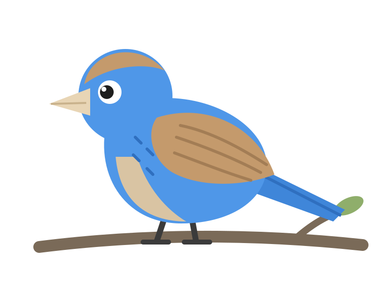

All numbers are minutes to drive that stretch of road, not speeds. "Normal" is the same road at the same time on a Saturday with no game. Worst roads are at the top.
| Road | Drive time now | Normal drive time | Delay | Last 5 min | Worst delay so far |
|---|
Drive times from Google Maps (traffic-aware), checked every 5 minutes from halftime until about 5 hours after the game, compared with a normal Saturday at the same clock time. "Congested" means at least 1.5 times normal and 2 or more minutes slow. Prepared by Blue Finch.